Ejercicios interactivos de triángulos rectángulos II
Elige la opcion correcta:
1Un árbol y una persona se encuentran en orillas opuestas de un río. Esta persona observa el punto más alto del árbol bajo un ángulo de 40º. Si retrocede 15 m y vuelve a medir el ángulo, obtiene 20º. ¿Cuál es la altura del árbol y la anchura del río?
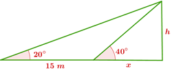
Usamos las razones trigonométricas apropiadas en cada uno de los dos triángulos rectángulos y resolvemos el sistema:
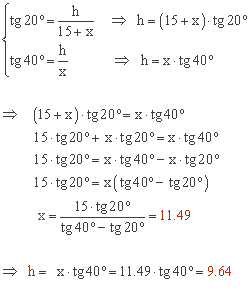
El árbol mide 9.64 metros de altura y la anchura del río es de 11.49 metros.
2Eva observa desde la ventana de su casa un accidente con un ángulo de 60º. Como es my curiosa y desde allí no lo ve muy bien, sube a la azotea del edificio que está 15 metros más arriba. Coge unos prismáticos y ahora ve el accidente con un ángulo de 35º. ¿Qué altura tiene el edificio y a qué distancia de casa de Eva ocurrió el accidente?
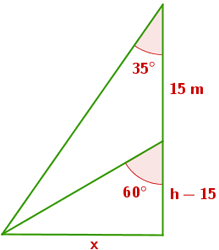
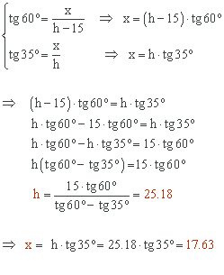
El edificio tiene una altura de 25.18 metros. El accidente ocurrió a una distancia de 17.63 metros de casa de Eva.
3Un barco se encuentra en cierto punto del mar. La situación de los viajeros es dramática ya que en este momento les queda combustible para recorrer 400 metros. El capitán del barco observa en este punto la luz de un faro con un ángulo de elevación de 8º. Después de recorrer 250 metros en dirección hacia el faro, el ángulo que forma la luz con la horizontal del mar es ahora de 22º. ¿Qué altura tiene el faro? ¿Llegará el barco a tierra?
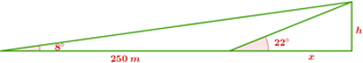
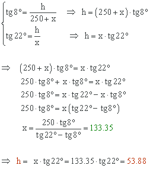
El faro tiene 53.88 metros de altura.
Al principio, el barco tenía combustible para recorrer 400 metros. Después de recorrer, 250 metros, le queda combustible para recorrer 400 − 250 = 150 metros. Pero hemos calculado que desde este punto hasta la orilla hay 133.35, así que el barco llegará a tierra.
4En una carretera de montaña nos encontramos con una señal que indica un 25% de pendiente. ¿Qué ángulo forma este tramo de la carretera con la horizontal? Si hemos recorrido 5 km por esta carretera, ¿cuántos metros hemos ascendido?
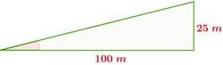
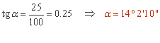
El ángulo es de 14º 2' 10''.
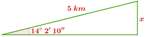
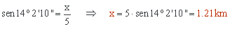
Hemos ascendido 1.21 km.
Realiza: (Redondea a dos decimales en el caso que sea necesario)
5En cierta ciudad están de obras. La distancia entre dos grúas es de 120 metros. Nos situamos en un punto que se encuentra entre las dos grúas(no necesariamente en el punto medio). Desde aquí observamos el punto más alto de las grúas y vemos que los ángulos que se forman con la horizontal son de 35º y 23º. Si las dos grúas miden lo mismo, ¿cuál es su altura?
Altura = m
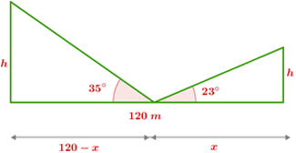
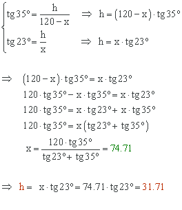
La altura de ambas grúas es de 31.71 metros.
6Calcula la altura del cuerpo más alto:
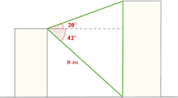
Altura = m
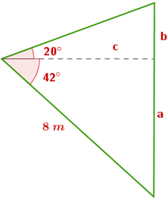
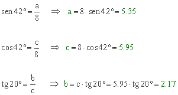
La altura del cuerpo más alto es 5.35 + 2.17 = 7.52 metros.
7Se puede acceder a una mina descendiendo 500 metros por un ascensor vertical o por un camino de 950 metros que tiene un ángulo de inclinación de 20º tal y como muestra la figura. ¿Qué diferencia de altura hay entre las dos entradas a la mina?
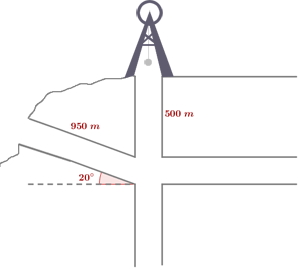
Diferencia de altura = m
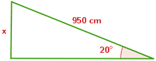
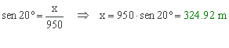
500 − 324.92 = 175.08
Entre las dos entradas a la mina hay una diferencia de altura de 175.08 metros.
8Calcular el lado de un pentágono regular inscrito en una circunferencia de 8 cm de radio
Lado = cm
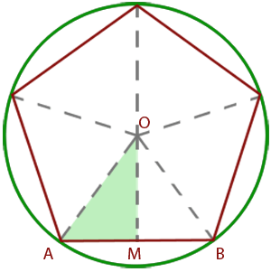
Unimos el centro de la circunferencia con los vértices del pentágono, con lo que éste queda dividido en cinco triángulos iguales. Nos quedamos con uno de estos triángulos: el triángulo OAB.
Como la circunferencia tiene 360º, el ángulo por ser un ángulo central del pentágono tiene 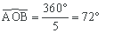
Trazamos la apotema OM, de manera que el triángulo OAB queda dividido en dos triángulos iguales OAM y OMB.
Consideramos el triángulo OAM:
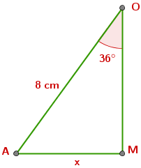
El ángulo tiene entonces 72º/2 = 36º
Calculamos la longitud del lado AM = x:
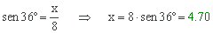
Esta longitud es la mitad del lado del pentágono, así que el lado del pentágono tiene una longitud de 4.7 · 2 = 9.4 cm.
Si tienes dudas puedes consultar la teoría